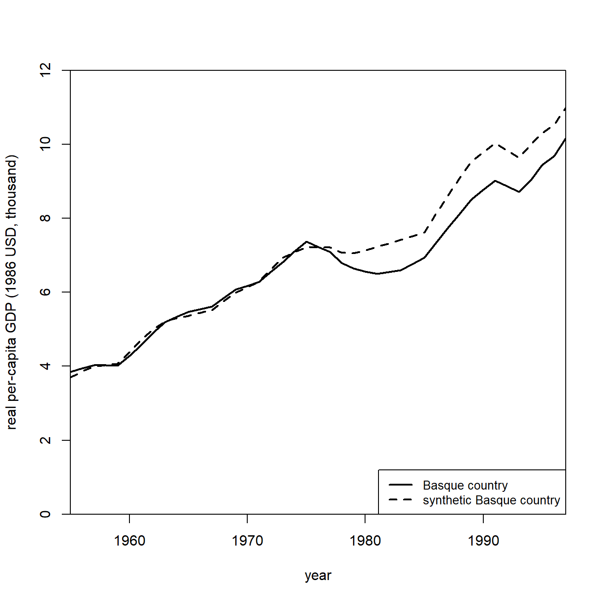
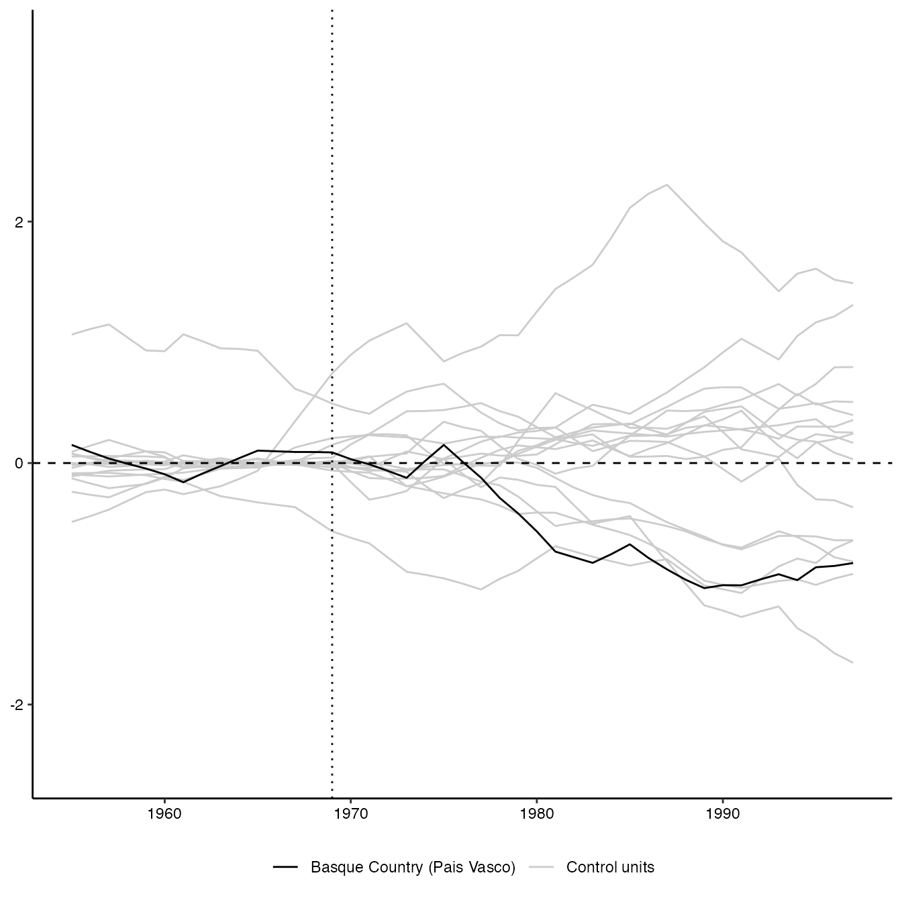
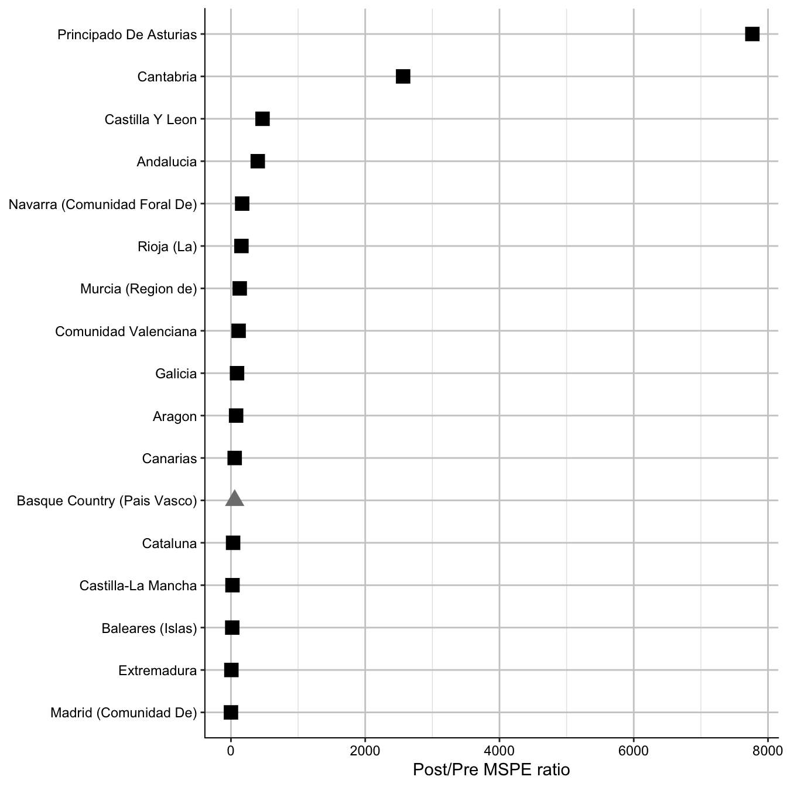

Introduction
In order to demonstrate SCtools it is useful to start
with a replication of the cannonical Basque study from Abadie and
Gardeazabal (2003).
library(SCtools)
#> Loading required package: future
library(Synth)
#> ##
#> ## Synth Package: Implements Synthetic Control Methods.
#> ## See https://web.stanford.edu/~jhain/synthpage.html for additional information.Now we can load the basque data set.
data("basque")As per the normal Synth workflow, we need to reformat
our data using the dataprep function in which we specify
our counterfactuals and our response variables.
dataprep.out <- dataprep(
foo = basque,
predictors = c("school.illit", "school.prim", "school.med",
"school.high", "school.post.high", "invest"),
predictors.op = "mean",
time.predictors.prior = 1964:1969,
special.predictors = list(
list("gdpcap", 1960:1969 ,"mean"),
list("sec.agriculture", seq(1961, 1969, 2), "mean"),
list("sec.energy", seq(1961, 1969, 2), "mean"),
list("sec.industry", seq(1961, 1969, 2), "mean"),
list("sec.construction", seq(1961, 1969, 2), "mean"),
list("sec.services.venta", seq(1961, 1969, 2), "mean"),
list("sec.services.nonventa", seq(1961, 1969, 2), "mean"),
list("popdens", 1969, "mean")),
dependent = "gdpcap",
unit.variable = "regionno",
unit.names.variable = "regionname",
time.variable = "year",
treatment.identifier = 17,
controls.identifier = c(2:16, 18),
time.optimize.ssr = 1960:1969,
time.plot = 1955:1997)Now, we can run the SCM algorithm using the synth
function.
synth.out <- synth(data.prep.obj = dataprep.out, method = "BFGS")Synth provides some additional helper functions to
extract information from the outputted object including the ability to
analyze the outputs:
gaps <- dataprep.out$Y1plot - (dataprep.out$Y0plot %*% synth.out$solution.w)And generate plots of the counterfactual:
path.plot(synth.res = synth.out, dataprep.res = dataprep.out,
Ylab = "real per-capita GDP (1986 USD, thousand)", Xlab = "year",
Ylim = c(0, 12), Legend = c("Basque country",
"synthetic Basque country"),
Legend.position = "bottomright")
Extending the Analysis
At this point, SCtools extends the analysis from
Synth, While Synth generates an analysis on
one configured dataset, SCtools provides the tooling to
permute the dataset and generate multiple placebos to test the
sensitivity of our SCM output.
placebo <- generate.placebos(dataprep.out = dataprep.out,
synth.out = synth.out, strategy = "multiprocess")We can then use the plot_placebos to run a placebo test
for the findings in Abadie and Gardeazabal (2003).
plot_placebos(placebo)
Finally, we can also run the mspe_plot function to run a
post/pre MPSE test for that case, and find how unlikely it would be to
find by chance the effects identified.
mspe_plot(placebo)